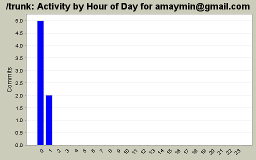
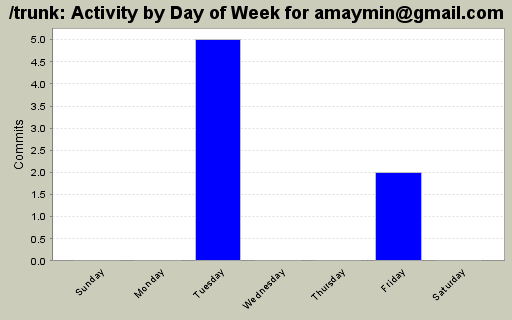
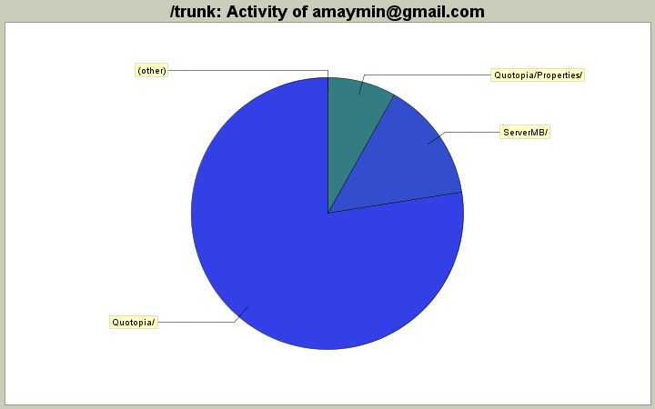

| Directory | Changes | Lines of Code | Lines per Change |
|---|---|---|---|
| Totals | 7 (100.0%) | 377 (100.0%) | 53.8 |
| Quotopia/ | 4 (57.1%) | 292 (77.5%) | 73.0 |
| ServerMB/ | 1 (14.3%) | 54 (14.3%) | 54.0 |
| Quotopia/Properties/ | 2 (28.6%) | 31 (8.2%) | 15.5 |

Issue 421: added decimal point option, divisor option for large forex sizes in settings tab
Issue 427: bid-ask spread now calculated properly both in raw amount and relative for basis points
290 lines of code changed in 5 files:
Issue 421 significant figures for bid,ask data.
also added bid-ask spread (absolute and relative) column
33 lines of code changed in 1 file:
Issue 420: Adding support for quotes in ServerMB with MBTrading
54 lines of code changed in 1 file: